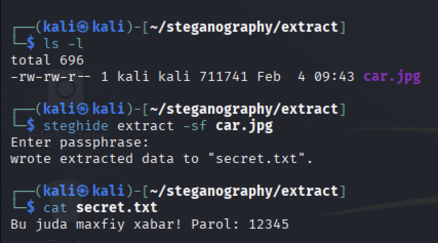

Steganografiya: Rasmlar ichiga ma'lumot yashirish
Steganografiya nima?
Ko’pchilik “ma’lumotni himoyalash” deganda uni shifrlashni (kodlashni) tushunadi. Lekin shifrlangan faylga qaragan odam unda qandaydir sir borligini darhol sezadi.
Steganografiya esa boshqacha ishlaydi. Uning maqsadi — ma’lumotning borligini umuman sezdirmaslik. Masalan, siz oddiy manzarali rasmni birovga yuborasiz, lekin uning ichida maxfiy matn yoki fayl yashiringan bo’ladi. Tashqaridan qaraganda u shunchaki oddiy rasm.
Bugun Kali Linux tizimidagi mashhur steghide vositasi yordamida buni qanday amalga oshirishni ko’rib chiqamiz.
1-qadam: Kerakli fayllarni tayyorlash
Bizga tajriba uchun ikkita narsa kerak:
- Tashuvchi fayl: Bitta oddiy rasm (masalan,
car.jpg). - Yashiriluvchi fayl: Ichida siri bor matnli fayl (masalan,
secret.txt).
Keling, terminalda oddiy matn faylini yaratib olamiz:
echo "Bu juda maxfiy xabar! Parol: 12345" > secret.txt
Hozir papkamizda rasm va matn fayli tayyor turibdi.

2-qadam: Ma’lumotni rasm ichiga joylash (Embed)
Endi steghide yordamida matnni rasmning piksellari orasiga joylaymiz. Buning uchun terminalga quyidagi buyruqni kiritamiz:
steghide embed -cf car.jpg -ef secret.txt
-cf(Cover File): Qaysi rasm ichiga yashiramiz? (car.jpg)-ef(Embed File): Nimani yashiramiz? (secret.txt)
Buyruqni kiritganingizda tizim sizdan parol so’raydi. Parolni eslab qoling, chunki keyinchalik ma’lumotni olish uchun u kerak bo’ladi.

3-qadam: Natijani tekshirish
Jarayon tugagach, car.jpg rasmini ochib ko’ring.
Qizig’i shundaki, rasmda hech qanday o’zgarish yo’q. Rangi, tiniqligi va ko’rinishi xuddi oldingidek. Fayl hajmi ham deyarli o’zgarmaydi. Oddiy foydalanuvchi bu rasmda sir yashiringanini payqay olmaydi.

4-qadam: Ma’lumotni qaytarib olish (Extract)
Tasavvur qiling, bu rasmni qabul qilib oluvchi odamsiz. Ichidagi xabarni o’qish uchun nima qilish kerak?
Sizga faqat rasm va kelishilgan parol kerak bo’ladi. Ma’lumotni ajratib olish uchun quyidagi buyruq ishlatiladi:
steghide extract -sf car.jpg
-sf(Stego File): Sir yashiringan fayl nomi.
Parolni kiritishingiz bilan, yashiringan secret.txt fayli paydo bo’ladi. Uni o’qib ko’ramiz:
cat secret.txt
Natija: Biz yashirgan xabar muvaffaqiyatli tiklandi.

Xulosa
Ko’rib turganingizdek, hamma fayl ham tashqaridan ko’ringanidek oddiy emas.
Steganografiya kiberxavfsizlikda ma’lumotlarni yashirin uzatish, raqamli imzolarni joylashtirish va CTF musobaqalarida keng qo’llaniladi. Bu usul fayllarni himoyalashning qo’shimcha va samarali uslubi hisoblanadi.